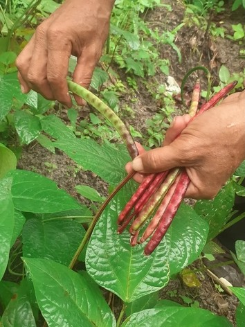
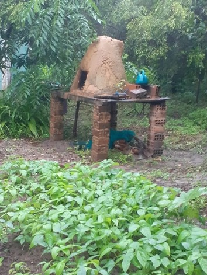
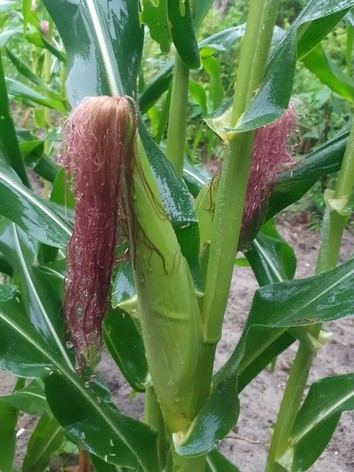
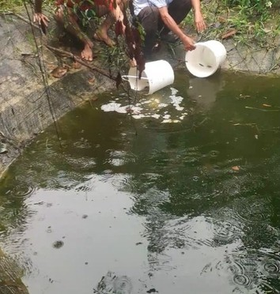
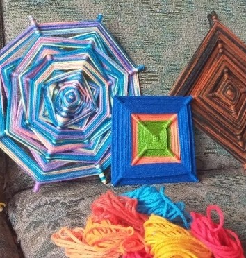
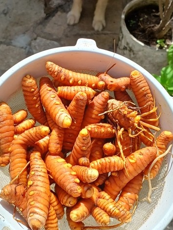
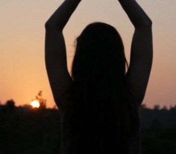

Somos o Centro de Apoio às Pessoas em Situação de Reequilíbrio Psicossocial – Catavento. Um espaço de acolhimento, convivência e reconexão em Barra de Gramame, João Pessoa – PB.
A ONG Cata Vento acolhe pessoas em situação de reequilíbrio biopsicossocial. Unimos cuidado, natureza, saber popular e ancestral, vida em comunidade e espiritualidade.
Acreditamos que o bem-estar nasce da relação com o outro, com a terra e consigo mesmo. Por isso cultivamos um espaço aberto, simples e acolhedor, onde cada pessoa é recebida com respeito.

Atividades que se complementam para cuidar das pessoas, da comunidade e do território.
Acolhimento, escuta e convivência para pessoas em processo de reequilíbrio.
Yoga, meditação, mindfulness, massoterapia, shiatsu, reiki, do-in, reflexologia e outras práticas de bem-estar.
Horta em mandala, agrofloresta, viveiro de mudas, troca de sementes, compostagem, cuidado com a água e mutirões de plantio.
Rodas de conversa, Rodas de Saberes Ancestrais, oficinas, cursos, zine educativo e participação no controle social do SUS.
Saboaria, cosmética natural, chás e ervas, mudas, alimentos naturais e vitrine de artistas locais.
Tintas e tons naturais, exsicatas e artesanato, como as mandalas de lã.
Noites do Zodíaco com observação dos astros, rodas de conversa e vivências.
Yoga e meditação para moradores do remanescente quilombola Gurugi e associados, e mutirões abertos.
A Casa Azul é o coração da Cata Vento. No terraço de convivência acontecem reuniões, rodas, oficinas e encontros da comunidade.
Um lugar pensado para receber todo mundo, com estrutura de acessibilidade:






Eventos, assembleias, reuniões abertas e mutirões da Cata Vento. Todo mundo é bem-vindo.
Enquanto a agenda não entra no ar, as datas dos encontros e mutirões são divulgadas no nosso Instagram.
Ver no Instagram @casaazulcataventoSomos uma associação civil sem fins lucrativos. Aqui estão nossos dados e documentos públicos.
Eleita em Assembleia Geral Extraordinária de 13/05/2024, com ata registrada em cartório.
Toda ajuda mantém a Casa Azul de portas abertas e as atividades acontecendo.
Qualquer valor faz diferença. Chave PIX (CNPJ):
Venha plantar, construir, ensinar e cuidar junto com a gente.
Quero ser voluntário Formulário de inscrição Em breve — por enquanto, fale com a gente pelo WhatsApp.Mutirões de plantio e cuidado com a terra, abertos a todas as pessoas.
Ver a agendaParcerias: instituições, coletivos e empresas que queiram somar. Divulgue: siga e compartilhe o @casaazulcatavento.